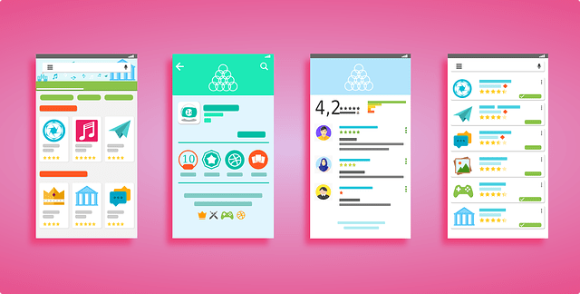
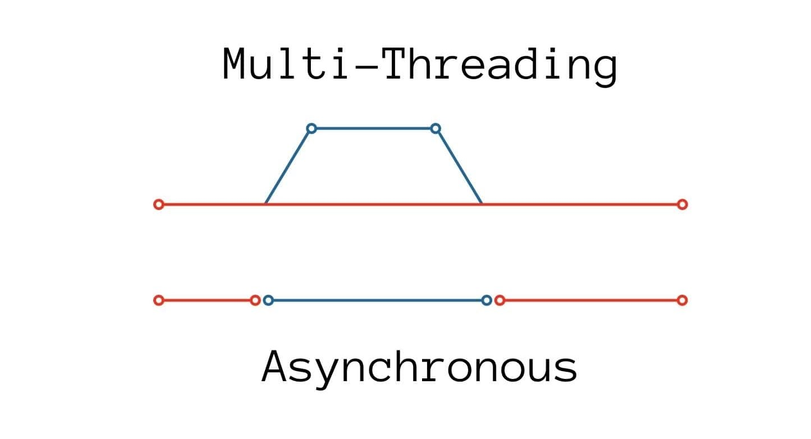
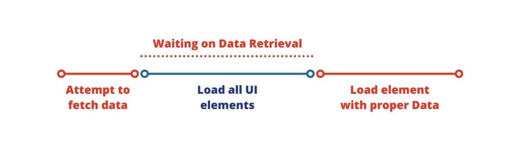
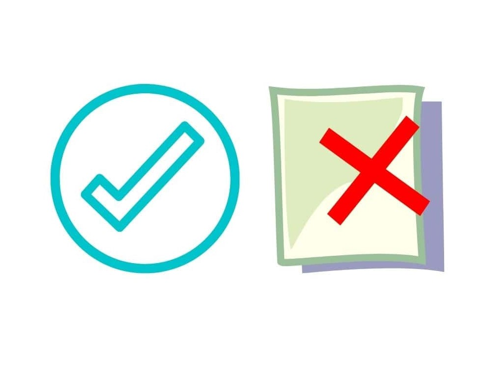

One of the more complicated concepts to understand in JavaScript is Asynchronous programming. Most of the time, our code works very linearly. If I were to call two functions back-to-back, function 1 will trigger, followed by function 2! This is representative of synchronous programming, which is something most programmers should be very familiar with.
However, there are cases in which this order is less than ideal. Asynchronous programming is used when we need our code to escape this linearity. One very common example in JavaScript is when we need to fetch data from an API. When we need our code to wait for the result of a request, we need Asynchronous Programming.
My Background
So what exactly is Asynchronous Programming? By definition, Asynchronous means not occurring at the same time. In the context of programming, our code is Asynchronous when they do not trigger one after another. With Asynchronous code, if one of our functions requires time to finish, the code will not get bottlenecked, but instead will continue on past the function. This is very useful because it prevents applications that require fetching data from loading too slowly!
For example, imagine you have a website that needs to fetch data from an external source to fill up one element in your page. By fetching the data asynchronously, you can request for the data before loading all your other elements in the page, and when the data has been retrieved, load the element with the proper data. With synchronous code, you will need to wait for the data to be retrieved, then load all your other elements, then fill the specific element with the proper data. That’s very inefficient!

Quickly loading User Interfaces is often the most important aspect of applications.
A lot of programmers think of Asynchronous code as multi-threading programming. That’s a common misconception. The idea of Asynchronous Programming is to have your code relinquish control anytime it doesn’t need it, and focus on other tasks. In the same thread, if your code fetched something that requires time, it will simply move on. Basically, it helps to maximise the efficiency of your code!

The difference between Multi-Threading vs Asynchronous.
If we were to go back to the website example, our code will first attempt to fetch the data that we need. While waiting for that fetch request to finish, it will not waste any time being stuck and instead move on to loading all the other elements in the page! When the request is finished, it then goes back and fills the specific element with the proper data. This all happens in one thread and it ensures that the thread does not waste any time waiting about!

When our code needs to wait, it just moves on!
Async and Promise
Let’s now move on to the Async keyword. In JavaScript, using the Async keyword simply makes your function an Asynchronous function. It’s that simple! The syntax looks something like this:
async function do_something() {#code}
Now what exactly does making our functions “Asynchronous” mean? Well, to be honest, nothing much… All it does is it opens up your function to be able to use JavaScript’s Promise-based code! In other words, it makes it so that your function now returns a Promise. But what is a Promise?
From the actual documentation, a Promise represents the eventual completion (or failure) of an asynchronous operation and its resulting value. Since a Promise is the result of an Asynchronous function (that takes time to complete), it’s value is unknown the moment it is created. Thus, instead of returning a null value for Asynchronous functions, JavaScript returns Promises that represent the state of your request. A Promise “promises” to return the value of the request, once the Asynchronous task is finished. Basically, a Promise is an object that will return the value of your request if it succeeds, or the error message if the request is rejected.
JavaScript Promises aim to help us with Asynchronous programming.
A Promise has 3 possible states - Pending, Fulfilled or Rejected. They simply represent the status of the request. Pending means that the request has yet to be completed, Fulfilled means the request was a success and Rejected means the request failed. We can decide what to do with the obtained value of a Fulfilled Promise, or what to do with the Error Message of a Rejected Promise.

JavaScript Promises can result in a Successful or Rejected request!
The way we use Promises in JavaScript is pretty unique. To use Promises, we have to attach Callback functions. Callback functions are simply functions that we pass as arguments into other functions. For promises, we normally provide two Callback functions, one if the Promise is Fulfilled (what to do with the obtained value), and another if the Promise is Rejected (what to do with the error message)!
In JavaScript, we use the .then() method to deal with the Fulfilled Promise’s obtained value, and the .catch() method to deal with the Rejected Promise’s error message.
Then and Catch
Let’s first deal with the .then() method. We input a Callback function into the .then() method as an argument, and that function will trigger if our Promise is Fulfilled. The Callback function will automatically be passed an argument that represents the obtained value of your request. For example:
async function fetch_data() {
return “Hello”
}
For a function like this, even though no request is made, it still returns a Promise since we dubbed it an Asynchronous function with the keyword “async”. Additionally, our “fetch_data” function is also likely to return a Fulfilled Promise almost instantly, because it does not require any sort of request. This will be a good time to demonstrate how to use the .then() method on Fulfilled Promises!
To use the returned Promise, we use the .then() method.
promise = fetch_data()
promise.then(function print_data(response) {
console.log(response);
})
This will print our response value (the response of our asynchronous function). In this case, the console will display “Hello”.
Notice that in this case, we are creating a function as the Callback function of our .then() method. That seems pretty cumbersome! JavaScript actually has Arrow function expressions that help us to create simple functions quickly. It looks something like this:
promise.then(response => {console.log(response});
This looks a lot neater than previously!
That’s how you use the .then() method! We call the method on our promise, and the argument passed into the Callback function of the .then() method will be the response of our Fulfilled Promise. Pretty simple stuff!
Similarly, the .catch() method is actually really simple too. Instead of passing the response of the Fulfilled Promise as the argument of the Callback Function, it will pass in the error of the Rejected Promise. Let’s see how this works:
async function fetch_data_rejected() {
throw “Hello”;
}
This new function “fetch_data_rejected” will throw an error message of “Hello”! We can access this message with the .catch() method. It will look something like this:
promise.then(error => {console.log(error});
This will similarly print out “Hello” in the console. It’s almost identical to the .then() method!
To recap, we use .then() to deal with the response of a Fulfilled Promise, and we use .catch() to deal with the error message of a Rejected Promise!
Conclusion
Asynchronous Programming is a concept that many programmers struggle with, myself included. I remember when I first started learning about the async, then and catch keywords, I was extremely confused! I hope that in today’s article, you have learnt what exactly each of those keywords represents. Promises in JavaScript is a particular dense topic and I merely talked about the basics of what we can do with Promises in JavaScript. If you are interested in learning more about Promises and Asynchronous JavaScript, I highly encourage you to take a look at the actual MDN Web Docs, which provides an in-depth tutorial on all things JavaScript!
I sincerely hope that I have cleared many people’s misconceptions and confusions with this article. If you enjoyed it or have learnt something, please subscribe to our email newsletter to stay up to date with all our latest articles! Stay cool, cucumbers!